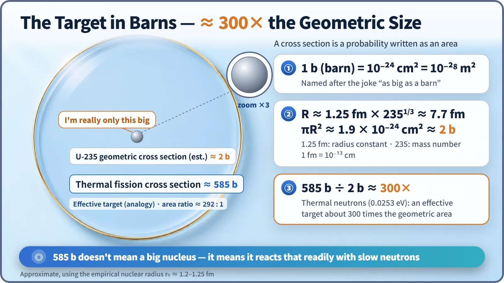
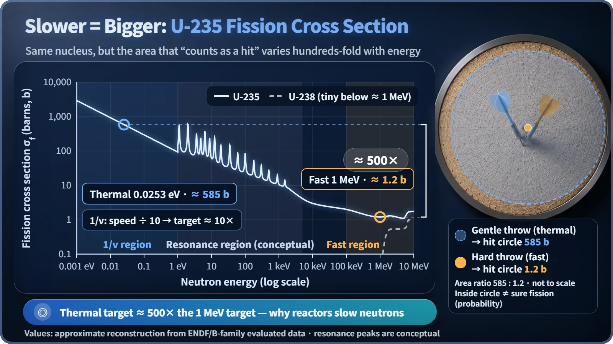

Nuclear Reactions & Fission · 039
The Magic Dartboard That Grows When You Throw Softly — Fission Cross Section Explained
A cross section is a probability written as an area. For slow neutrons, uranium-235 offers about 585 barns, roughly 300 times its actual size.
A fission cross section is the likelihood of fission expressed as an effective target area, measured in barns (1 b = 10⁻²⁴ cm²). For slow thermal neutrons, uranium-235 presents about 585 barns, roughly 300 times its geometric size of about 2 barns; for 1 MeV fast neutrons it shrinks to about 1.2 barns. [1]
Do you have to throw harder to break it?
If you want to smash a glass, throwing the ball harder is the obvious answer. So plenty of people assume the same about neutrons: surely the faster a neutron is, the better it splits a nucleus?
Inside a nuclear power plant, splitting uranium-235 works the other way around. A neutron fresh out of fission flies at about 20,000 km per second, yet the reactor deliberately slows it down to about 2.2 km per second before letting it meet uranium. The slow neutron is far better at splitting uranium-235. The number that captures how good it is at splitting is the fission cross section.
Picture a magic dartboard
A dartboard hangs on the wall, and its actual size never changes. But this board has a strange rule. Toss a dart gently, and the referee draws a "that counts as a hit" circle hundreds of times wider than the board. Throw it hard, and the referee shrinks that circle right down to around the size of the board.
| Dartboard | Nucleus and neutron |
|---|---|
| Real size of the board | Real size of the nucleus |
| Area of the "counts as a hit" circle | Cross section |
| How fast the dart is thrown | Neutron energy (speed) |
The cross section (σ, sigma) expresses the likelihood that a given reaction happens when one neutron meets one nucleus, translated into the effective target area the nucleus presents. Each kind of reaction has its own: for fission it is the fission cross section (σf); for simply capturing the neutron, the capture cross section. [2]
One barn: a joke about being as big as a barn
The unit for this target area is the barn. One barn is 10⁻²⁴ cm², a square centimeter divided by a trillion trillion. The name reportedly started as a joke among American researchers in 1942: by nuclear standards, an area like that was "as big as a barn."
Using the rule of thumb that nuclear radius grows with the cube root of the mass number, a uranium-235 nucleus has a radius of about 7.7 femtometers (1 fm = 10⁻¹³ cm), giving a cross-sectional area of about 2 barns. Yet its fission cross section for slow thermal neutrons is about 585 barns. The referee is counting a circle about 300 times larger than the actual board. [3]

Does 585 barns mean the nucleus is that big? No. A cross section isn't a size; it is a probability converted into units of area. The nucleus stays exactly as it is. When a reaction happens readily, the target simply works out to be large on paper.
The target dances with the speed
Plot uranium-235's fission cross section against neutron energy, and three regions stand out.
The very slow region (below roughly 1 eV). Room-temperature thermal neutrons have an energy of 0.0253 eV and a speed of about 2,200 m per second. Here the cross section follows a 1/v trend, inversely proportional to speed: cut the speed to a tenth and the cross section grows about tenfold. A slow neutron lingers near the nucleus longer, so it has more chances to react.
The resonance region (roughly 1 eV to a few keV). Sharp peaks shoot up densely at particular energies, and the graph turns jagged like a saw blade. Those peaks belong to the story of resonance absorption.
The fast region (above about 0.1 MeV). For the 1–2 MeV fast neutrons that come straight out of fission, uranium-235 presents a target of only about 1–1.3 barns, hundreds of times smaller than for thermal neutrons. [4]

Uranium-238 has a completely different personality. Below a threshold of about 1 MeV its fission cross section is practically negligible, and only faster neutrons see a target of a little over 0.5 barns. That's why, even though more than 99% of natural uranium is uranium-238, the star that keeps a thermal-neutron chain reaction going is uranium-235.
From one nucleus's target to a whole chunk of fuel
The σ so far is the target of a single nucleus: the microscopic cross section. Real fuel packs in an enormous number of nuclei, so we multiply by N, the number of nuclei in one cubic centimeter, to get the macroscopic cross section Σ = N·σ. Its unit is cm⁻¹, and it represents the likelihood of a reaction while a neutron travels 1 cm through the material. Its reciprocal is the mean free path, the average distance traveled before reacting.
That's why reactors slow neutrons down
Light-water reactors use water to deliberately slow neutrons down. Because uranium-235's target for thermal neutrons is hundreds of times bigger, even fuel containing only about 3–5% uranium-235 can sustain a steady chain reaction.
Cross-section data are also the first ingredient reactor designers reach for when they calculate a core. Evaluated nuclear data libraries, in which experimental results from around the world are compiled into energy-by-energy cross sections, are the basic input for reactor calculations. [5]
Key takeaways
The fission cross section is not the size of a nucleus. It is a report card, written as an area, of how readily a nucleus splits for neutrons of a given speed. Same nucleus, but throw the dart softly and the target grows: that is why reactors make their neutrons slow down.